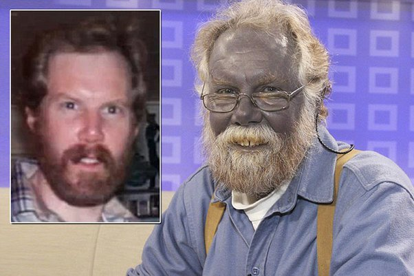
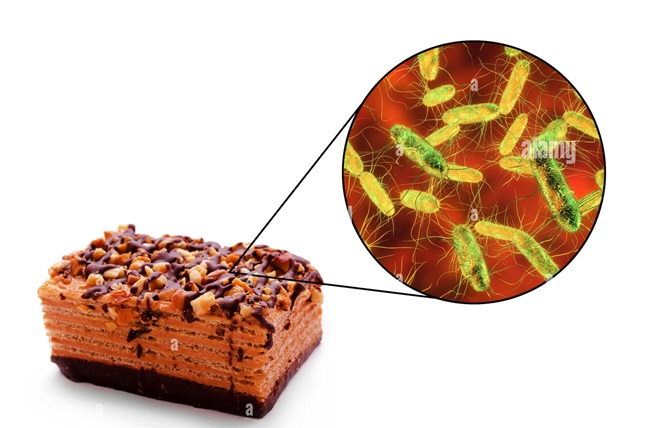
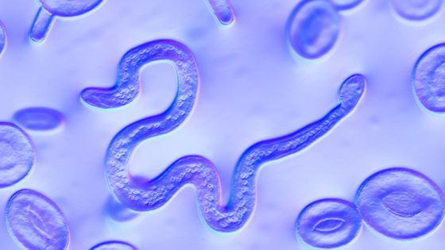
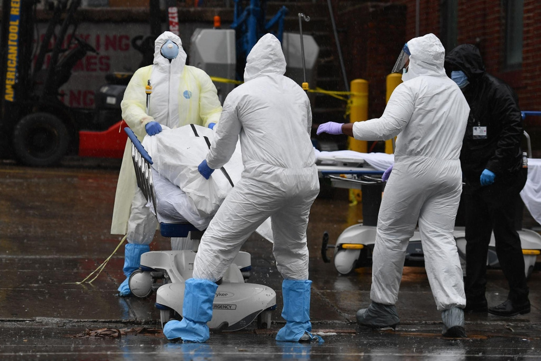

!!! ATTENTION certaines images peuvent atteindre la sensiblité d'autrui !!!
Mais quelques minutes plus tard, KELLY la mère d'ELISHA, vit son fils entrer en mutation et devenir totalement bleu !
Le jeune homme ayant été transporté au CHUR par les secours du SMUR, aurait suivi des analyses pointues sur son état de santé.
d'après certains résultats il aurait été victime du syndrome Stroumfyllien découvert auparavant par le professeur GARGAMEL Arnold, lui même atteind lorsqu'il enseignait encore au LPO Charles COËFFIN en 2002
L'homme aurait d'après les enquêteurs créé le entre guillemets syndrome et aurait contaminer sans le vouloir à l'époque un arbe qui avait été incendié par les autorités à huit clots en été 2003 pour éviter toute contaminations.
La contamination de ce professeur était à l'époque partielle avant de se généraliser sur son corps
Selon les enquêteurs, le professeurs aurait disparu sans laisser de traces.De plus, c'était un célibataire sans enfants mais qui apparement fréquentait une certaine "Nancy Vanlévé ô Léona" qui elle aussi travaillait et travaille toujours au Lycée Charles COËFFIN à l'administration de celui-ci
Professeur GARGAMEL Arnold 
Il aurait apparement disparu depuis plusieurs années et emporté avec lui l'antidote du syndrome. Il est a l'heure d'aujourd'hui le seul espoir du jeune Elisha pour un retour à un état normal...
Nous tenons à préciser aux lecteurs de notre page qu'à chaque nouvel élément de cette enquête un nouvel article sera publié
Restez connectés :)
7/05/23
Après le décès du jeune ayant contracté le syndrome stroumfyllien ELISHA YOUNOW en mars dernier, l’enquête de cet épisode a révélée une macabre histoire. L’Usine d’où provenait les confiseries tant appréciées par celui qui nous a quitté avait été contaminée et ne cesse de produire des confiseries infectées.

24/07/23
La scientifique Coquetta MACRELLA travaillant aux GADEVIAMOUN Laboratories aurait visiblement réussie à isoler le parasite "Stroumfyllien"
Une photo du parasite observé au microscope 
1/02/24
FLASH INFO
Le jeune ELISHA nous a malheureusement quitté et a succombé à sa maladie peu connue et mystérieuse

le corps du jeune homme a été transporté vers la zone 51 et la professeure MACRELLA a été porté disparue
Selon des témoignages elle aurait été apercue non loin de la zone en question
Mais alors, QUE SE PASSE T'IL REELLEMENT derière cette usine de confiseries ???